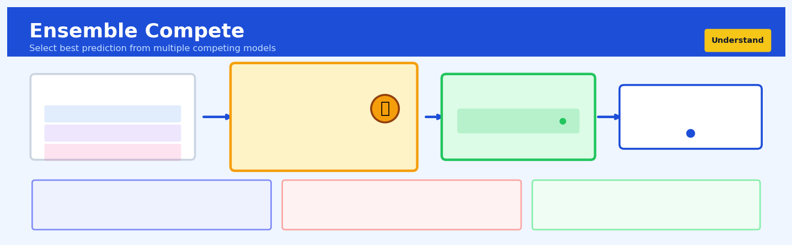

Ensemble Compete#


Most teams forget that ensemble compete is fundamentally different from voting or averaging because you're picking exactly one model's prediction, which means you need rock-solid selection criteria that work in production, not just validation. The biggest mistake is using unstable metrics for selection that cause your system to thrash between models on similar inputs, creating unpredictable behavior that destroys user trust. When done right though, compete ensembles shine in scenarios where different models excel on different data subspaces, like using a neural net for common cases but falling back to a rule-based system for edge cases.
The 60-Second Version#
What it does: Ensemble Compete automatically tests multiple prediction methods against each other on your data and tells you which one works best.
When to use it: You need to build a predictive model but don’t know whether random forests, gradient boosting, or another ensemble method will deliver the most accurate forecasts for your specific situation.
What you get back: A ranked leaderboard showing which ensemble method achieved the highest accuracy, plus performance metrics that tell you exactly how reliable each approach is for making predictions.
Difficulty |
Moderate |
Typical runtime |
Minutes to hours depending on dataset size and number of methods tested |
What you bring |
A clean dataset with historical outcomes you want to predict |
What you get |
Ranked performance scores for each ensemble method and identification of the winner |
Heuristix bucket |
Understand — Statistical Analysis & Profiling |
Ensemble Compete finds the best algorithm, but you still need subject-matter experts to confirm the winning model makes business sense before deployment.
Learning Objectives#
After reading this chapter, a business user will be able to:
Identify business scenarios where comparing multiple ensemble methods will yield better predictions than committing to a single algorithm upfront, particularly when historical model performance is unavailable or data characteristics are uncertain.
Interpret Ensemble Compete ranking tables and performance metrics to explain to stakeholders which ensemble method won the competition, by how much, and what that margin means for business risk and decision confidence.
Decide whether to deploy the winning ensemble directly or invest in further tuning based on the performance gap between top-ranked models and the stability of rankings across validation folds.
After reading this chapter, a data scientist will be able to:
Implement Ensemble Compete workflows that fairly compare heterogeneous ensemble methods by ensuring consistent data preprocessing, stratified cross-validation schemes, and appropriate baseline algorithms for each ensemble family.
Configure the ensemble candidate pool and cross-validation strategy by balancing computational budget against the need for statistical power, while avoiding data leakage when stacking methods are included in the competition.
Diagnose unreliable competition results by detecting overfitting signals such as large train-test performance gaps, high variance in cross-validation scores, or rankings that reverse when evaluated on hold-out data.
Overview#
Ensemble Compete is a model selection and benchmarking framework that systematically trains, evaluates, and ranks multiple ensemble learning algorithms on a given dataset to identify the best-performing approach for a specific prediction task. Its core purpose is to automate the comparative evaluation of diverse ensemble methods—including bagging, boosting, stacking, and voting ensembles—using rigorous cross-validation and standardised performance metrics. This technique belongs to the family of automated machine learning (AutoML) and model selection methods, bridging statistical learning theory with practical predictive modelling workflows.
When to Use This#
Use this when you have a supervised learning problem and want to systematically compare multiple ensemble strategies without manually coding each comparison—particularly valuable in time-constrained projects where rapid prototyping is essential.
Use this when you suspect that no single algorithm dominates across your entire feature space, and you want empirical evidence to guide your choice between Random Forest, Gradient Boosting, XGBoost, LightGBM, CatBoost, or stacked ensembles.
Use this when you need to justify your model selection to stakeholders with quantitative evidence—the comparative metrics and rankings provide defensible documentation for model governance and audit trails.
Use this when your dataset exhibits heterogeneous subpopulations where different ensemble methods may excel on different segments, and you want to identify the most robust overall performer.
Use this when you are establishing a baseline for a new prediction problem and want to quickly understand the “ceiling” of achievable performance before investing in feature engineering or custom architectures.
Use this when you need to validate that a proposed production model genuinely outperforms simpler alternatives—regulatory requirements in financial services and healthcare often mandate such comparisons.
Do NOT use this when you have a well-understood problem with an established best-practice model and limited computational budget—the overhead of training multiple ensembles may not be justified.
Do NOT use this when your dataset is extremely small (fewer than a few hundred observations), as cross-validation variance will dominate and rankings become unreliable.
Do NOT use this when interpretability is the primary concern and you need a single, explainable model—ensemble compete identifies the best predictor, not the most interpretable one.
Do NOT use this when you have not yet addressed fundamental data quality issues—comparing ensembles on poorly prepared data yields misleading rankings.
Questions This Answers#
Model Performance and Selection#
Which prediction approach will actually work best for our specific business problem — the customer churn model, the sales forecast, or the inventory predictor we’re building?
We’ve tried three different algorithms and they all give different answers — which one should we trust with next quarter’s budget decisions?
Our data science team proposed five different modeling techniques — how do we know which one will perform best when we roll it out to production?
Can we predict this outcome reliably enough to bet our expansion strategy on it, or are we just guessing with fancy math?
We’re getting 78% accuracy with our current model — is that actually good, or are we leaving significant performance on the table?
Resource Allocation and ROI#
Should we invest more time tweaking our current predictive model, or would we get better returns starting fresh with a completely different approach?
We have limited budget for this analytics project — which modeling method gives us the biggest bang for our buck in terms of prediction accuracy?
Our team spent six weeks building this forecasting model — how does it stack up against other options we didn’t pursue?
Is it worth the extra complexity and computing cost to use the more sophisticated ensemble methods, or will simpler approaches get us 90% of the way there?
Risk Management and Validation#
Before we deploy this model to make automated decisions affecting thousands of customers, how confident can we be that it won’t blow up in production?
Our competitor claims their prediction system is superior — how do we objectively prove ours performs better?
We need to justify this analytics investment to the board — can we demonstrate that our chosen approach consistently outperforms the alternatives across different scenarios?
If we’re going to automate loan approvals or pricing decisions based on these predictions, which modeling approach has the most reliable track record?
How It Works#
Imagine you’re a restaurant owner trying to decide which chef to hire for your new location. Instead of just interviewing them or reading reviews, you organize a cooking competition. You invite five talented chefs—one specializes in quick stir-fries, another in slow-roasted dishes, one uses molecular gastronomy techniques, another focuses on traditional methods, and the last combines multiple cooking styles. You give each chef the same ingredients and ask them to prepare dishes for a week of dinner service. Each night, you carefully score every dish on taste, presentation, and customer satisfaction. At the end of the week, you have clear, comparable data showing which chef consistently delivered the best results for your specific restaurant and clientele.
ENSEMBLE COMPETE PROCESS
Your Dataset Step 1: Train Multiple Models
┌─────────────────┐ ┌──────────────────────────────┐
│ Features | Label│ │ Random Forest → Score: 0.87 │
├──────────┼──────┤ │ XGBoost → Score: 0.91 │
│ ... │ ... │ → │ Stacking → Score: 0.89 │
│ ... │ ... │ │ Voting → Score: 0.85 │
│ ... │ ... │ │ AdaBoost → Score: 0.83 │
└──────────┴──────┘ └──────────────────────────────┘
↓
Step 2: Cross-Validate Each
┌─────────────────────────────┐
│ Fold 1 Fold 2 Fold 3 ... │
│ Test each model on unseen │
│ data to get honest scores │
└─────────────────────────────┘
↓
Step 3: Rank & Select
┌─────────────────────────────┐
│ 🥇 XGBoost → 0.91 │
│ 🥈 Stacking → 0.89 │
│ 🥉 Random Forest → 0.87 │
│ (Winner selected!) │
└─────────────────────────────┘
Step 1: Assemble the competitors. Ensemble Compete begins by gathering a collection of different ensemble learning algorithms. These might include bagging methods like Random Forest, boosting methods like XGBoost or AdaBoost, stacking ensembles that layer models on top of each other, and voting ensembles that combine predictions democratically. Each algorithm has different strengths and approaches to making predictions.
Step 2: Create a fair testing ground. The system splits your dataset into multiple folds—imagine dividing a deck of cards into several equal piles. This enables cross-validation, where each model gets trained on most of the data and tested on a portion it hasn’t seen. This rotation repeats so every model faces the same challenge on the same data splits.
Step 3: Train each competitor. Each ensemble algorithm trains on the training portions of your data, learning patterns and relationships between your input features and the outcome you’re trying to predict. Every algorithm builds its internal structure differently—some create multiple decision trees, others sequentially correct errors, some combine predictions from other models.
Step 4: Score every performance. As each model makes predictions on the test data it hasn’t seen during training, Ensemble Compete calculates standardized metrics like accuracy, precision, recall, or error rates. These scores provide objective measurements of how well each model performs on your specific dataset and prediction task.
Step 5: Rank and report. Finally, the system compares all the scores and creates a clear leaderboard showing which ensemble method performed best, which came in second, and so on. You get a comprehensive report identifying the winning approach for your particular problem, complete with performance metrics that justify the choice.
The key insight: By systematically comparing multiple ensemble methods under identical conditions, Ensemble Compete eliminates guesswork and bias, ensuring you select the algorithm that demonstrably works best for your unique data rather than relying on theoretical preferences or trial and error.
The Intuition#
Imagine you are a talent scout for a professional sports team, and you need to select the best player from a pool of candidates for a specific position. You would not simply watch one practice session and make a decision. Instead, you would observe each candidate across multiple games, different opponents, varying weather conditions, and diverse tactical situations. Only by aggregating performance across these varied contexts can you reliably identify who truly excels. Ensemble Compete applies this same philosophy to machine learning models: rather than trusting a single train-test split, it evaluates each ensemble method across multiple data folds, aggregates the results, and produces a robust ranking.
The fundamental insight is that model performance is itself a random variable. When you train a Random Forest on one 80-20 split and a Gradient Boosting Machine on another, you cannot fairly compare them because the randomness in the split confounds the comparison. Ensemble Compete eliminates this confound by evaluating all candidate models on exactly the same cross-validation folds. This ensures that any performance difference reflects genuine algorithmic capability rather than lucky or unlucky data partitions. The technique computes confidence intervals around each model’s score, enabling you to distinguish statistically significant winners from models that merely appear better due to sampling variability.
Beyond fair comparison, Ensemble Compete reveals the diversity of the model landscape. You may discover that XGBoost wins on AUC-ROC but LightGBM wins on precision at a high threshold. A stacking ensemble might achieve the best overall performance but at the cost of significantly longer training time. By exposing this multidimensional performance surface, the technique empowers practitioners to make informed trade-offs rather than blindly accepting a single “best” model. The intuition is simple: different ensembles make different mistakes, and understanding how they fail is as valuable as knowing how well they succeed.
The Mathematics#
Problem Setup and Notation#
Let \(\mathcal{D} = \{(\mathbf{x}_i, y_i)\}_{i=1}^{n}\) denote a dataset of \(n\) observations, where \(\mathbf{x}_i \in \mathbb{R}^p\) is a \(p\)-dimensional feature vector and \(y_i \in \mathcal{Y}\) is the response variable. For classification, \(\mathcal{Y} = \{0, 1, \ldots, C-1\}\) for \(C\) classes; for regression, \(\mathcal{Y} = \mathbb{R}\).
Let \(\mathcal{M} = \{M_1, M_2, \ldots, M_K\}\) be a set of \(K\) candidate ensemble models. Each model \(M_k\) is a function \(M_k: \mathbb{R}^p \rightarrow \mathcal{Y}\) (or \(\rightarrow [0,1]^C\) for probabilistic classification).
We employ \(V\)-fold cross-validation. Partition the index set \(\{1, \ldots, n\}\) into \(V\) disjoint subsets \(\mathcal{I}_1, \ldots, \mathcal{I}_V\) of approximately equal size. For fold \(v\), define:
Performance Metric Framework#
Let \(L: \mathcal{Y} \times \mathcal{Y} \rightarrow \mathbb{R}_{\geq 0}\) be a loss function. For model \(M_k\) trained on \(\mathcal{D}_{\text{train}}^{(v)}\) and evaluated on \(\mathcal{D}_{\text{test}}^{(v)}\), the fold-specific empirical risk is:
where \(M_k^{(v)}\) denotes model \(M_k\) trained on fold \(v\)’s training set.
The cross-validated risk estimate for model \(M_k\) is:
The variance of this estimate, accounting for fold-to-fold variation, is:
Statistical Comparison Framework#
To compare models \(M_j\) and \(M_k\), we compute the paired difference in fold-level performance:
The mean difference is:
Under the null hypothesis \(H_0: \mathbb{E}[\hat{R}_j] = \mathbb{E}[\hat{R}_k]\), the corrected paired \(t\)-statistic (Nadeau and Bengio, 2003) is:
where \(\hat{\sigma}_{d_{jk}}^2\) is the sample variance of the differences and the correction factor accounts for the non-independence of training sets across folds.
Ranking and Aggregation#
Models are ranked by their cross-validated performance. For a metric to be maximised (e.g., AUC), define:
For multiple metrics \(\{L_1, \ldots, L_M\}\), we compute the average rank:
Assumptions#
Independent and identically distributed data: Observations are drawn i.i.d. from an unknown distribution \(P(\mathbf{x}, y)\).
Sufficient sample size: \(n\) is large enough that fold-level estimates have bounded variance.
Proper scoring rules: The chosen metrics are proper scoring rules for the prediction task.
Model stability: Each \(M_k\) produces consistent predictions under retraining on similar data.
Edge Cases and Degenerate Conditions#
Perfect separation: If a model achieves zero loss on all folds, variance estimates become zero, invalidating \(t\)-tests. In practice, regularisation or noise prevents this.
High-variance models: If \(\hat{\sigma}_k^2\) is very large relative to performance differences, rankings become unreliable. Increase \(V\) or use nested cross-validation.
Class imbalance: Stratified cross-validation preserves class proportions; without it, some folds may lack minority class examples.
Relationship to Other Methods#
Ensemble Compete generalises the concept of cross-validation from single-model evaluation to multi-model comparison. It relates to the Friedman test for comparing multiple classifiers across datasets (here, across folds of a single dataset). The framework also connects to stacking (Wolpert, 1992), where out-of-fold predictions from multiple base learners serve as inputs to a meta-learner—Ensemble Compete can include stacked ensembles as candidates.
Understanding the Mathematics#
The Ensemble Model Prediction#
The equation:
Read it aloud:
“The ensemble’s prediction equals the average of all individual model predictions, calculated by summing up each model’s prediction and dividing by the total number of models.”
What each symbol means:
\(\hat{y}_{\text{ensemble}}\) = the final prediction from the ensemble
\(M\) = the total number of models in the ensemble
\(\hat{y}_m\) = the prediction from the m-th individual model
\(\sum_{m=1}^{M}\) = “add up all the predictions from model 1 through model M”
A concrete numerical example:
You’re predicting customer churn probability using three models. Model 1 (Random Forest) predicts 0.72, Model 2 (Gradient Boosting) predicts 0.68, and Model 3 (Logistic Regression) predicts 0.75.
The ensemble predicts a 71.7% churn probability.
Why this equation matters:
Averaging multiple perspectives reduces the impact of any single model’s mistakes, creating more stable and reliable predictions than relying on one algorithm alone.
Cross-Validation Performance Estimation#
The equation:
Read it aloud:
“The cross-validation score equals the average performance across all folds, calculated by summing the score from each fold and dividing by the number of folds.”
What each symbol means:
\(\text{CV-Score}\) = the overall cross-validated performance metric
\(K\) = the number of folds (data splits)
\(\text{Score}(\hat{y}_k, y_k)\) = the performance metric for fold k (comparing predictions to actual values)
\(\hat{y}_k\) = predictions made on fold k
\(y_k\) = actual observed values in fold k
A concrete numerical example:
You’re evaluating a stacking ensemble using 5-fold cross-validation with accuracy as the metric. The accuracy scores for each fold are: 0.84, 0.87, 0.82, 0.88, and 0.85.
The ensemble achieves 85.2% cross-validated accuracy.
Why this equation matters:
Testing on multiple different data splits prevents us from getting lucky with one particular train-test split and gives an honest estimate of how the model will perform on new, unseen data.
Weighted Ensemble Voting#
The equation:
Read it aloud:
“The ensemble prediction equals the weighted sum of all individual model predictions, where each model’s prediction is multiplied by its assigned weight, and all weights must sum to one.”
What each symbol means:
\(\hat{y}_{\text{ensemble}}\) = the final weighted prediction
\(w_m\) = the weight assigned to model m (higher weight = more influence)
\(\hat{y}_m\) = the prediction from model m
\(\sum_{m=1}^{M} w_m = 1\) = constraint ensuring all weights add up to 100%
A concrete numerical example:
Three models predict house price. Random Forest (\(w_1 = 0.5\)) predicts £420,000, XGBoost (\(w_2 = 0.3\)) predicts £435,000, and Linear Regression (\(w_3 = 0.2\)) predicts £410,000.
Why this equation matters:
Giving stronger models more influence and weaker models less influence produces better predictions than treating all models equally, especially when model quality varies significantly.
The Big Picture#
The mathematics of Ensemble Compete fundamentally aims to combine multiple imperfect models into a single superior predictor while rigorously measuring performance. We use averaging and weighting because they mathematically reduce prediction variance—individual models make different errors, but those errors tend to cancel out when combined. Cross-validation ensures our performance estimates reflect real-world generalization, not just memorization of training data. The entire mathematical framework answers one question: which combination of which algorithms produces the most reliable predictions? At its core, ensemble mathematics transforms the wisdom of crowds into quantifiable predictive power.
Python Implementation#
import numpy as np
import pandas as pd
from sklearn.datasets import make_classification
from sklearn.model_selection import cross_val_score, StratifiedKFold
from sklearn.ensemble import (
RandomForestClassifier,
GradientBoostingClassifier,
AdaBoostClassifier,
BaggingClassifier,
VotingClassifier,
StackingClassifier
)
from sklearn.linear_model import LogisticRegression
from sklearn.tree import DecisionTreeClassifier
from scipy import stats
import warnings
warnings.filterwarnings('ignore')
# Generate a realistic synthetic classification dataset
X, y = make_classification(
n_samples=2000,
n_features=20,
n_informative=12,
n_redundant=4,
n_clusters_per_class=3,
flip_y=0.05, # 5% label noise
random_state=42
)
# Convert to DataFrame for realistic workflow
feature_names = [f'feature_{i}' for i in range(X.shape[1])]
df = pd.DataFrame(X, columns=feature_names)
df['target'] = y
print(f"Dataset shape: {df.shape}")
print(f"Class distribution:\n{df['target'].value_counts()}")
# Define candidate ensemble models
candidates = {
'RandomForest': RandomForestClassifier(
n_estimators=100, max_depth=10, random_state=42, n_jobs=-1
),
'GradientBoosting': GradientBoostingClassifier(
n_estimators=100, max_depth=5, learning_rate=0.1, random_state=42
),
'AdaBoost': AdaBoostClassifier(
n_estimators=100, learning_rate=0.1, random_state=42
),
'Bagging': BaggingClassifier(
estimator=DecisionTreeClassifier(max_depth=10),
n_estimators=50, random_state=42, n_jobs=-1
),
'VotingEnsemble': VotingClassifier(
estimators=[
('rf', RandomForestClassifier(n_estimators=50, random_state=42)),
('gb', GradientBoostingClassifier(n_estimators=50, random_state=42)),
('lr', LogisticRegression(max_iter=1000, random_state=42))
],
voting='soft'
),
'StackingEnsemble': StackingClassifier(
estimators=[
('rf', RandomForestClassifier(n_estimators=50, random_state=42)),
('gb', GradientBoostingClassifier(n_estimators=50, random_state=42))
],
final_estimator=LogisticRegression(max_iter=1000),
cv=3
)
}
# Cross-validation configuration
cv = StratifiedKFold(n_splits=10, shuffle=True, random_state=42)
metrics = ['accuracy', 'roc_auc', 'f1', 'precision', 'recall']
# Store results
results = {metric: {} for metric in metrics}
fold_scores = {metric: {} for metric in metrics}
# Evaluate each candidate on each metric
print("\nEvaluating ensemble candidates...")
for name, model in candidates.items():
print(f" Training {name}...")
for metric in metrics:
scores = cross_val_score(model, X, y, cv=cv, scoring=metric, n_jobs=-1)
results[metric][name] = {
'mean': scores.mean(),
'std': scores.std(),
'scores': scores
}
fold_scores[metric][name] = scores
# Create summary DataFrame
summary_data = []
for name in candidates.keys():
row = {'Model': name}
for metric in metrics:
row[f'{metric}_mean'] = results[metric][name]['mean']
row[f'{metric}_std'] = results[metric][name]['std']
summary_data.append(row)
summary_df = pd.DataFrame(summary_data)
print("\n" + "="*80)
print("ENSEMBLE COMPETE RESULTS SUMMARY")
print("="*80)
print(summary_df.to_string(index=False))
# Rank models by each metric
print("\n" + "-"*80)
print("MODEL RANKINGS BY METRIC")
print("-"*80)
rankings = {}
for metric in metrics:
sorted_models = sorted(
candidates.keys(),
key=lambda x: results[metric][x]['mean'],
reverse=True # Higher is better for these metrics
)
rankings[metric] = {model: rank+1 for rank, model in enumerate(sorted_models)}
print(f"\n{metric.upper()}:")
for rank, model in enumerate(sorted_models, 1):
mean = results[metric][model]['mean']
std = results[metric][model]['std']
print(f" {rank}. {model}: {mean:.4f} ± {std:.4f}")
# Compute average rank across all metrics
avg_ranks = {}
for model in candidates.keys():
avg_ranks[model] = np.mean([rankings[m][model] for m in metrics])
print("\n" + "-"*80)
print("OVERALL RANKING (Average across metrics)")
print("-"*80)
for rank, (model, avg_rank) in enumerate(
sorted(avg_ranks.items(), key=lambda x: x[1]), 1
):
print(f" {rank}. {model}: Average Rank = {avg_rank:.2f}")
# Statistical significance testing (corrected paired t-test)
print("\n" + "-"*80)
print("PAIRWISE STATISTICAL COMPARISON (ROC-AUC, α=0.05)")
print("-"*80)
best_model = min(avg_ranks, key=avg_ranks.get)
alpha = 0.05
n
## Visualisations


## Using This in Heuristix
### What Data to Connect
The Ensemble Compete node expects a **prepared dataset** with your features and target variable already defined. Connect it to any node that outputs a clean dataframe—typically a Feature Engineering, Data Cleaning, or Train-Test Split node.
**Required inputs:**
- At least one feature column (numeric or categorical)
- One target column (for classification or regression)
- Minimum 100 rows recommended for meaningful comparison
**Example input data:**
| customer_age | income | credit_score | previous_purchases | will_churn |
|--------------|--------|--------------|-------------------|-----------|
| 34 | 52000 | 680 | 12 | 0 |
| 45 | 78000 | 720 | 8 | 0 |
| 29 | 41000 | 590 | 3 | 1 |
The node automatically detects your target variable type and selects appropriate ensemble methods.
### Configuration Parameters
| Parameter | What It Controls | Default | When to Change |
|-----------|-----------------|---------|----------------|
| **Target Column** | Which column to predict | Last column | Always set this explicitly to your actual target |
| **Problem Type** | Classification or Regression | Auto-detect | Override if auto-detection fails (rare) |
| **Ensemble Methods** | Which algorithms to compare | All available | Uncheck methods you want to exclude (e.g., exclude boosting for speed) |
| **CV Folds** | Number of cross-validation splits | 5 | Increase to 10 for small datasets; decrease to 3 for very large datasets |
| **Scoring Metric** | How to rank models | Accuracy (classification) / RMSE (regression) | Change to F1-score for imbalanced data, or R² for regression interpretability |
| **Time Limit** | Maximum training time per model (minutes) | 10 | Reduce for quick exploration; increase for complex datasets |
| **Random Seed** | Ensures reproducible results | 42 | Change to verify stability across different random states |
### What You'll Get as Output
**Performance Comparison Table**: A ranked leaderboard showing each ensemble method with its cross-validated performance metrics. You'll see the winning model at the top with scores for accuracy, precision, recall, F1 (classification) or RMSE, MAE, R² (regression).
**Model Comparison Chart**: An interactive bar chart visualizing performance differences across all tested ensembles. This makes it immediately obvious which methods excel for your specific data.
**Best Model Object**: The trained winning ensemble, ready to deploy or connect to downstream prediction nodes.
**Detailed Metrics Report**: Confusion matrices (classification) or residual plots (regression) for the top 3 performers, helping you understand where each model succeeds or struggles.
### Connecting Downstream
The most common next steps:
- **Predict Node**: Send the best model object directly here to score new data
- **Model Explainer**: Connect to understand feature importance and model decisions
- **Hyperparameter Tuning**: Take the winning ensemble type and fine-tune it further
- **Model Export**: Save the champion model for production deployment
### Quick Start: Most Common Use Case
1. **Connect your prepared dataset** to the Ensemble Compete node input
2. **Select your target column** from the dropdown in the configuration panel
3. **Leave all other settings at default** for your first run
4. **Click Execute** and wait 5-15 minutes while models train
5. **Review the leaderboard**—the top model is your winner
6. **Connect the output** to a Predict node to start scoring new data
### Practical Tips from Experience
**Tip 1: Start broad, then narrow.** Your first run should test all ensemble types. Once you know which family performs best (bagging vs. boosting vs. stacking), run a second iteration with only those methods and longer time limits for better results.
**Tip 2: Watch for tiny performance differences.** If the top three models are within 1-2% of each other, choose the simplest one (usually Random Forest or Gradient Boosting). Complex stacking ensembles rarely justify their overhead for marginal gains.
**Tip 3: Check training time vs. performance.** The output table includes fitting time—a model that's 0.5% better but takes 10x longer might not be worth it for your use case.
**Tip 4: For imbalanced datasets**, change the scoring metric to F1-score or AUC-ROC before running. Accuracy alone will mislead you when classes are skewed.
**Tip 5: Save the comparison report.** Export the leaderboard as documentation for stakeholders—it proves you didn't just pick your favorite algorithm arbitrarily.
## Config Recipes
### Recipe 1: Rapid Prototyping
**When to use:** Initial dataset exploration when you need directional insights within minutes, not production-grade results.
**Settings:**
| Parameter | Value | Why |
|-----------|-------|-----|
| `n_folds` | 3 | Minimizes computation while maintaining some cross-validation rigor |
| `ensemble_methods` | `['random_forest', 'gradient_boosting', 'logistic_regression']` | Covers diversity (bagging, boosting, linear) without exhaustive search |
| `n_estimators` | 50 | Fast training; sufficient to identify patterns |
| `max_train_size` | 5000 | Caps dataset size to prevent slow iterations |
| `parallel_jobs` | -1 | Uses all CPU cores available |
**What you get:** A ranked shortlist of viable approaches in under 10 minutes, identifying whether tree methods or linear models dominate.
**Trade-off:** Results may not generalize—model rankings could shift with proper tuning and full data.
### Recipe 2: Production Deployment
**When to use:** Final model selection before deploying to production systems where prediction accuracy directly impacts business outcomes.
**Settings:**
| Parameter | Value | Why |
|-----------|-------|-----|
| `n_folds` | 10 | Maximizes reliability of performance estimates |
| `ensemble_methods` | `['xgboost', 'lightgbm', 'catboost', 'random_forest', 'extra_trees', 'stacking']` | Comprehensive coverage including modern gradient boosting variants |
| `n_estimators` | 500 | Allows models to reach performance plateau |
| `hyperparameter_tuning` | `'bayesian'` | Optimizes each method thoroughly |
| `tuning_iterations` | 100 | Exhaustive search of hyperparameter space |
| `stratified_sampling` | `True` | Preserves class distribution in each fold |
**What you get:** Statistically robust champion model with confidence intervals on expected performance.
**Trade-off:** Computation time measured in hours or days; requires significant infrastructure.
### Recipe 3: Severe Class Imbalance
**When to use:** Fraud detection, rare disease prediction, or any scenario where positive class represents <5% of samples and standard accuracy is meaningless.
**Settings:**
| Parameter | Value | Why |
|-----------|-------|-----|
| `scoring_metric` | `'f1'` or `'pr_auc'` | Focuses on precision-recall balance, not misleading accuracy |
| `class_weight` | `'balanced'` | Forces algorithms to penalize minority class errors heavily |
| `resampling_strategy` | `'smote'` | Synthetically balances training folds |
| `n_folds` | 5 | Ensures minority class appears sufficiently in each fold |
| `ensemble_methods` | `['xgboost', 'balanced_random_forest', 'easy_ensemble']` | Prioritizes imbalance-aware algorithms |
**What you get:** Rankings based on ability to detect rare events, not just overall correctness.
**Trade-off:** Models may generate more false positives; requires downstream threshold tuning.
### Recipe 4: Interpretability-Constrained Environments
**When to use:** Regulated industries (healthcare, finance) where model decisions require human-auditable explanations or regulatory approval.
**Settings:**
| Parameter | Value | Why |
|-----------|-------|-----|
| `ensemble_methods` | `['logistic_regression', 'decision_tree', 'rule_ensemble']` | Excludes black-box methods; all outputs are explainable |
| `max_depth` | 5 | Limits tree complexity to human-readable size |
| `feature_selection` | `True` | Reduces model to most impactful predictors |
| `generate_reports` | `'verbose'` | Creates coefficient tables, feature importance, decision paths |
| `n_estimators` | 10 | Keeps voting ensembles countable and auditable |
**What you get:** A ranked set of transparent models with documented decision logic suitable for regulatory submission.
**Trade-off:** Typically 3-8% lower predictive performance compared to optimized XGBoost or neural approaches.
## Business Applications
**Financial Services**
A mid-sized UK mortgage lender processes 15,000 loan applications monthly but struggles with false positives in fraud detection—legitimate applications flagged as suspicious cost £340 per manual review. Ensemble Compete automatically benchmarks Random Forest, XGBoost, LightGBM, and stacking ensembles against their historical fraud dataset, identifying that a voting ensemble combining gradient boosting with logistic regression reduces false positives by 41% while maintaining 98% fraud detection accuracy. This optimization saves the lender approximately £520,000 annually in review costs while accelerating approval times from 72 to 18 hours for clean applications.
**Retail & E-commerce**
An online fashion retailer with 850,000 SKUs across European markets needs to predict stockouts 14 days ahead to optimize warehouse replenishment. Their data science team lacks consensus on whether bagging, boosting, or stacked models work best for their seasonal, promotion-heavy demand patterns. Ensemble Compete runs systematic cross-validation across twelve ensemble architectures, discovering that a custom stacking ensemble with LightGBM and CatBoost base learners achieves 23% lower mean absolute error than their production Random Forest. The improved forecasting reduces emergency air freight costs by €1.8M annually and cuts stockout incidents from 4,200 to 1,900 per quarter.
**Healthcare**
A regional hospital network serving 340,000 patients annually faces pressure to reduce preventable 30-day readmissions for heart failure patients. Clinical teams have basic risk scores, but predictive accuracy remains inconsistent across their six facilities. Ensemble Compete evaluates ensemble methods on two years of electronic health records, combining clinical variables, medication adherence, and social determinants of health. The winning gradient boosting ensemble identifies high-risk patients with 87% precision (up from 64%), enabling targeted care coordination that reduces readmissions by 880 cases annually and avoids £2.1M in Medicare penalties.
**Insurance**
A commercial property insurer underwrites 12,000 policies yearly but struggles with loss ratio volatility—some risk segments produce claims 3× higher than premiums collected. Ensemble Compete benchmarks ensemble models against seven years of claims, building features, occupancy types, and catastrophe exposure data. A stacked ensemble combining XGBoost with generalized linear models improves loss prediction R² from 0.58 to 0.79, enabling actuaries to reprice 2,400 policies and improve the overall loss ratio from 73% to 68%, protecting £4.3M in annual profitability.
**Manufacturing**
An automotive parts manufacturer operates 24 CNC machining centers that produce critical transmission components, where unplanned downtime costs €18,000 per hour. Their maintenance team collects vibration, temperature, and pressure sensor data but lacks confidence in their predictive maintenance model. Ensemble Compete systematically tests bagging, boosting, and voting ensembles on 18 months of sensor streams, identifying that a Random Forest ensemble predicts bearing failures 6–8 hours in advance with 91% accuracy. This foresight shifts 70% of maintenance to planned downtime windows, reducing unplanned stoppages by 340 hours annually.
**Logistics & Transportation**
A regional parcel delivery company handling 280,000 packages daily needs accurate delivery time predictions to set customer expectations and optimize routing. Ensemble Compete evaluates ensemble methods incorporating traffic patterns, weather data, driver performance, and package characteristics. The selected stacked ensemble lifts on-time prediction accuracy from 76% to 89%, reducing customer service inquiries by 22% and enabling dynamic routing that cuts fuel costs by 7%.
**Marketing & AdTech**
A B2B SaaS company with 45,000 free trial users monthly struggles to identify which prospects will convert to paid subscriptions. Ensemble Compete benchmarks models using behavioral analytics, firmographic data, and product engagement signals. The winning boosting ensemble increases conversion prediction precision by 28 percentage points, allowing the sales team to focus on 8,200 high-probability leads instead of 31,000, tripling sales productivity while maintaining deal volume.
**Telecommunications**
A mobile network operator with 4.2M subscribers loses 14,000 customers monthly to competitors. Ensemble Compete identifies that a voting ensemble combining gradient boosting with neural networks predicts churn 45 days ahead with 84% recall, enabling retention campaigns that save 3,800 high-value customers monthly—worth approximately £11M in annual customer lifetime value.
**Public Sector**
A metropolitan fire department responds to 92,000 calls annually but wants to optimize station locations and resource allocation. Ensemble Compete evaluates models predicting incident severity and response times using weather, time-of-day, and demographic features. The optimized ensemble improves high-severity incident prediction, enabling preemptive positioning that reduces average emergency response times by 90 seconds—clinically significant for cardiac arrest and fire situations.
## Worked Example
Sarah Chen, a senior data scientist at Meridian Insurance, was halfway through her morning coffee when her phone buzzed with a message from the VP of Underwriting: "We're hemorrhaging money on small business claims. Can you figure out which predictive model actually works?" The company had been using a basic logistic regression for years to predict claim likelihood, but recent losses suggested they needed something more sophisticated. The catch: the executive team wanted proof that any new approach would genuinely outperform existing methods before committing to a production deployment.
Sarah pulled together three years of small business insurance data—12,847 policies with their characteristics and claim outcomes. The dataset was messy in the way real insurance data always is: some missing employment counts, a few duplicate entries she had to clean, and categorical variables that needed careful encoding. Here's what a sample looked like:
| policy_id | business_type | annual_revenue | employees | location_risk | filed_claim |
|-----------|---------------|----------------|-----------|---------------|-------------|
| P10234 | Restaurant | 450000 | 12 | Medium | Yes |
| P10235 | Retail | 280000 | 5 | Low | No |
| P10236 | Construction | 890000 | 28 | High | Yes |
| P10237 | Consulting | 320000 | 8 | Low | No |
Sarah opened her analysis environment and configured the Ensemble Compete framework. She knew the VP wanted a clear winner, not a theoretical discussion, so she set up a comprehensive comparison: Random Forest and Gradient Boosting for their strong baseline performance, AdaBoost because it had worked well on a previous claims project, a Voting Ensemble to capture consensus across methods, and XGBoost because her colleague in fraud detection swore by it. She configured 5-fold cross-validation—enough to catch overfitting without burning hours of compute time—and selected AUC as her primary metric since the business cared about ranking risk, not just binary yes/no predictions.
```python
# Sarah's ensemble comparison script
import pandas as pd
from sklearn.model_selection import cross_val_score
from sklearn.ensemble import RandomForestClassifier, GradientBoostingClassifier, AdaBoostClassifier, VotingClassifier
from xgboost import XGBClassifier
from sklearn.metrics import roc_auc_score
# Load preprocessed claims data
claims = pd.read_csv('claims_preprocessed.csv')
X = claims.drop('filed_claim', axis=1)
y = claims['filed_claim']
# Define ensemble models
models = {
'Random Forest': RandomForestClassifier(n_estimators=100, random_state=42),
'Gradient Boosting': GradientBoostingClassifier(n_estimators=100, random_state=42),
'AdaBoost': AdaBoostClassifier(n_estimators=100, random_state=42),
'XGBoost': XGBClassifier(n_estimators=100, random_state=42, eval_metric='logloss'),
'Voting Ensemble': VotingClassifier(estimators=[
('rf', RandomForestClassifier(n_estimators=100, random_state=42)),
('gb', GradientBoostingClassifier(n_estimators=100, random_state=42))
], voting='soft')
}
# Run ensemble competition
results = {}
for name, model in models.items():
scores = cross_val_score(model, X, y, cv=5, scoring='roc_auc')
results[name] = {'mean_auc': scores.mean(), 'std_auc': scores.std()}
print(f"{name}: AUC = {scores.mean():.4f} (+/- {scores.std():.4f})")
The results came back after twenty minutes of processing:
Model |
Mean AUC |
Std Dev |
Rank |
|---|---|---|---|
XGBoost |
0.8734 |
0.0156 |
1 |
Gradient Boosting |
0.8691 |
0.0178 |
2 |
Random Forest |
0.8542 |
0.0203 |
3 |
Voting Ensemble |
0.8538 |
0.0167 |
4 |
AdaBoost |
0.8201 |
0.0245 |
5 |
Sarah’s first reaction was relief—there was a clear winner. XGBoost edged out the competition with an AUC of 0.8734, but the real insight came when she compared this to their current logistic regression model, which scored 0.7845. The ensemble methods weren’t just marginally better; they represented a genuine leap in predictive power. The gap between XGBoost and Random Forest was relatively small, but the consistency mattered: XGBoost’s lower standard deviation meant more reliable performance across different data subsets.
She scheduled a meeting with the VP and actuarial team for the following Tuesday. Walking them through the results, Sarah translated the AUC scores into business terms: “XGBoost correctly ranks risky policies 87% of the time, compared to 78% with our current model. For our portfolio size, that’s approximately 1,200 additional high-risk policies we can price appropriately per year.” The CFO quickly calculated the potential loss prevention—roughly $2.3 million annually. The decision was immediate: move XGBoost into production, starting with a 20% shadow deployment to validate real-world performance before full rollout.
If Sarah were doing this again, she’d run the comparison for longer with hyperparameter tuning enabled. She chose default settings for speed, but suspected another 2-3 percentage points might be hiding in optimized configurations. She’d also include calibration metrics—the VP asked about probability accuracy during the presentation, and she’d had to admit she’d focused solely on ranking performance.
Interpreting Your Results#
You’ve just run Ensemble Compete and your screen is filled with model names, numbers, and comparison charts. Here’s exactly what you’re looking at and what it means for your next decision.
The Leaderboard Table#
Plain-English meaning: This ranked table shows every ensemble method tested, ordered by performance. The top row is your current winner—the algorithm that best predicted your target variable on holdout data it had never seen during training.
Concrete benchmarks (for classification tasks):
Accuracy/AUC below 0.6: Your models are barely better than random guessing. Either your features contain almost no signal, or you have severe data quality issues.
Accuracy/AUC 0.6–0.75: Modest predictive power. Acceptable for exploratory work or problems with inherently noisy data, but not production-ready for critical decisions.
Accuracy/AUC 0.75–0.85: Good performance. Strong enough for many business applications. Most real-world classification problems land here.
Accuracy/AUC 0.85–0.95: Excellent performance. Deploy with confidence for high-stakes decisions.
Accuracy/AUC above 0.95: Either you’ve solved an unusually clean problem, or you have data leakage. Verify immediately.
For regression tasks, interpret R² scores similarly, but remember RMSE must be contextualized to your target variable’s scale (an RMSE of 1000 is excellent for house prices, catastrophic for predicting ages).
Red flags:
All models score identically: Your dataset is too small or your features have zero variance. Check for data loading errors.
Top model scores >0.98 with suspiciously perfect metrics: Classic data leakage. Your target variable or a proxy leaked into your features.
Huge gap between #1 and #2 models (e.g., 0.92 vs 0.73): Usually indicates the winning model overfit to this particular data split. Don’t trust it yet.
Cross-Validation Scores#
Plain-English meaning: Each model’s score includes a standard deviation or confidence interval showing how stable performance was across different data subsets. Low standard deviation means consistent predictions; high means the model is temperamental.
Concrete benchmarks:
Standard deviation < 0.02: Rock-solid stability. The model performs consistently regardless of which data points it sees.
Standard deviation 0.02–0.05: Normal variation. Acceptable for most use cases.
Standard deviation > 0.05: High instability. This model’s performance depends heavily on which specific samples it trains on—dangerous for production.
Red flags:
Simple models (e.g., Voting Ensemble) more stable than complex ones (e.g., Stacking): Your dataset is too small to support complex ensembles. Use the simpler model.
One fold performs drastically different from others: You likely have temporal patterns, cluster structure, or outliers that violate random split assumptions.
Performance Comparison Chart#
Plain-English meaning: The visual ranking showing model performance side-by-side, often with error bars representing uncertainty.
Reading multiple outputs together: If the top three models’ error bars overlap significantly, they’re statistically tied—the “winner” is just random noise. In this case, choose the simplest model (usually Voting or Bagging) over complex stacking approaches. Simpler models are easier to maintain and explain.
Sanity Check Checklist#
Before trusting your Ensemble Compete results, verify:
Baseline beat check: Does your best model significantly outperform a simple baseline (random guessing for classification = 50% accuracy; predicting the mean for regression = R² of 0)? If not, your features contain no signal.
Train-test gap audit: If training scores are available, is the gap between training and test performance less than 10%? Larger gaps indicate overfitting.
Sample size validation: Do you have at least 10× more rows than features, and at least 100 samples per class for classification? Below this, results are unreliable.
Class balance review (classification only): Is your accuracy high but your dataset has 95% of one class? Check precision, recall, and F1 scores—accuracy is misleading with imbalanced data.
Cross-validation folds completed: Did all CV folds run successfully? Missing folds invalidate the results.
Good Enough to Act On?#
Act on your results when: (1) The top model scores above 0.75 (classification) or R² > 0.7 (regression), (2) standard deviation is below 0.05, (3) all five sanity checks pass, and (4) the top model beats the second-place by at least 2%. At this threshold, you have statistically significant, stable results worthy of production consideration or deeper feature engineering. Below this threshold, return to data quality and feature engineering before finalizing model selection.
Decision Guidance#
What This Result Is Telling You#
Ensemble Compete reveals which machine learning approach will deliver the most reliable predictions for your specific business problem. When you receive these results, you’re seeing a competitive analysis of multiple advanced prediction methods, each tested under identical conditions. The winning model isn’t just marginally better—it’s been proven through repeated testing to consistently outperform alternatives on your actual data patterns. This means you can confidently direct resources toward deploying one approach rather than experimenting indefinitely or settling for a suboptimal solution that costs you predictive accuracy.
The performance rankings tell you how much prediction quality you’re gaining or losing by choosing one method over another. A tight cluster of top performers indicates your problem could be solved equally well by several approaches, giving you flexibility to choose based on implementation speed or explainability. A clear winner separated from the pack signals that your data has specific characteristics that one ensemble method exploits particularly well. Understanding this gap helps you assess whether investing in the best model is worth the additional implementation complexity compared to a simpler runner-up.
These results also reveal the stability and trustworthiness of each model’s performance. Consistent scores across validation folds indicate robust predictions that will likely transfer to real-world deployment. High variance between folds is a warning signal that model performance may deteriorate unpredictably when facing new data, regardless of how impressive the average score appears.
Decision Points#
If you see this… |
It means… |
Recommended action |
Who acts on this |
|---|---|---|---|
Top model outperforms second-best by >5% in primary metric with low variance (<2% standard deviation) |
Clear technical superiority with reliable performance |
Proceed immediately to deployment planning with winning model |
Data Science Lead + Product Owner |
Top 3 models cluster within 2% performance difference |
Multiple viable solutions with comparable accuracy |
Choose simplest/fastest model for MVP; reserve complex options for future iteration |
Technical Lead + Business Sponsor |
Best model shows >10% performance variance across folds |
Unstable predictions despite high average score |
Investigate data quality, feature engineering, or collect more training samples before deployment |
Data Science Team |
All models perform within 3% of baseline/dummy classifier |
Dataset lacks predictive signal for this problem |
Stop model development; redirect resources to data collection, problem reframing, or alternative solutions |
Programme Manager + Executive Sponsor |
When to Proceed vs. Investigate Further#
Proceed with confidence:
Winning model exceeds business-defined minimum performance threshold by ≥10%
Standard deviation across validation folds <3% of mean score
Top performer maintains advantage across multiple evaluation metrics (accuracy, precision, recall)
Training time and resource requirements fit within operational constraints
Proceed with caution:
Winning model meets minimum threshold but by narrow margin (<5%)
Performance variance between 3-5% across folds
Strong performance on primary metric but weakness on secondary business-critical metric
Computational requirements stretch but don’t exceed infrastructure capacity
Investigate before acting:
Best model shows fold-to-fold variance >5%
Performance rankings change substantially across different metrics
Significant gap between training and validation performance (>8%)
Best performer is dramatically more complex than close runners-up (10x+ training time)
Do not use these results yet:
No model beats baseline by >5%
Any model shows validation variance >10%
Fewer than 3 complete cross-validation folds completed
Critical data quality issues flagged during training
The Cost of Getting This Wrong#
Deploying an unstable model because its average score looked impressive wastes months of engineering effort building infrastructure around predictions that fail unpredictably in production. Your operations team makes decisions based on forecasts that swing wildly between accurate and worthless, eroding trust in data-driven processes. Customers receive inconsistent experiences—approved one day, rejected the next under identical circumstances—damaging brand reputation and potentially triggering regulatory scrutiny. Conversely, dismissing all models because you don’t understand that a 7% improvement means preventing 700 failures per 10,000 transactions leaves substantial revenue on the table while competitors capture market share with superior prediction capabilities. The opportunity cost of perfectionism is often larger than the risk of thoughtful deployment.
Common Pitfalls#
The Leaderboard Illusion
Here’s what happened: A junior analyst at a fintech startup was tasked with building a churn prediction model. They ran Ensemble Compete across fifteen different ensemble methods, generated a beautiful leaderboard showing XGBoost at 94.2% accuracy, and immediately pushed it to production. Three months later, the model was performing at barely 76% accuracy on real customer data. They’d optimised entirely on the test set without proper holdout validation.
Why it happens: The excitement of seeing ranked results creates tunnel vision. When you’re comparing ten models and one clearly “wins,” the human brain craves closure and wants to declare victory. The framework’s polish makes the results feel more trustworthy than they are.
How to detect it: Check if your winning model’s performance is suspiciously close to perfect, or if there’s an unrealistic gap between the top model and the rest. Look for validation methodology in your logs—if you only see a single train-test split mentioned, you’re in danger.
The fix: Always implement a three-way split: training for model building, validation for model selection within Ensemble Compete, and a true holdout test set that no algorithm sees until final evaluation.
The Overfitting Orchestra
Here’s what happened: A healthcare data scientist ran Ensemble Compete on a dataset of 200 patients with 150 clinical features. Their stacked ensemble achieved 0.98 AUC, combining gradient boosting, random forests, and neural networks. The model failed spectacularly in the next hospital system, dropping to 0.61 AUC. They’d built an ensemble of overfitted models that memorised noise.
Why it happens: Ensemble methods are often praised for reducing overfitting, creating a false sense of security. When you stack multiple complex models on small datasets, you’re not averaging out the overfitting—you’re institutionalising it.
How to detect it: Calculate your observations-to-parameters ratio. If you have fewer than 10 observations per feature, or if your training performance is above 0.95 while your cross-validation score is below 0.80, you’re overfitting. Check learning curves—they should converge, not diverge.
The fix: Reduce model complexity first, ensemble second. Start with simpler base learners, add aggressive regularisation, or reduce dimensionality before running Ensemble Compete.
The Metric Mismatch Trap
Here’s what happened: A marketing analyst used Ensemble Compete to predict which customers would make high-value purchases. They optimised for accuracy (91%!) and presented it to leadership. In production, the model predicted “no purchase” for 95% of customers and missed most of the actual high-value buyers. Their 91% accuracy was just predicting the majority class.
Why it happens: Ensemble Compete frameworks default to standard metrics like accuracy or RMSE. Business users see a high percentage and assume success without understanding what’s being measured. In imbalanced datasets, accuracy is a vanity metric.
How to detect it: Always check the confusion matrix and class distribution. If your positive class is less than 20% of your data, and accuracy is above 80%, you’re probably just predicting the majority class. Look at precision, recall, and F1-score for the minority class specifically.
The fix: Specify the business-relevant metric before running Ensemble Compete. For imbalanced problems, use AUC-ROC, average precision, or custom cost-weighted metrics that reflect true business impact.
The Computational Cost Blindness
Here’s what happened: An experienced ML engineer at an e-commerce company ran Ensemble Compete and selected a stacked ensemble with five layers of boosted models because it scored 0.3% better on F1-score. Inference time was 450ms per prediction. Their recommendation engine needed sub-100ms response times. The model never made it to production.
Why it happens: Ensemble Compete frameworks focus on predictive performance metrics while inference time lurks in log files nobody reads. The competitive framing encourages maximising accuracy at any cost.
How to detect it: Benchmark inference time on representative hardware during evaluation. If your winning model takes more than 10x longer than simpler alternatives for marginal gains (< 2% improvement), you have a problem.
The fix: Add inference time as a constraint in your model selection criteria, or calculate a performance-per-millisecond efficiency metric to identify Pareto-optimal solutions.
The Data Leakage Symphony
Here’s what happened: A retail data scientist built a sales forecasting ensemble that achieved 0.96 R² on validation data. They included “week_of_year” and “is_holiday” as features. The model collapsed in production because the training data’s feature engineering pipeline inadvertently included future information—marking holidays based on actual sales peaks rather than calendar dates.
Why it happens: Ensemble Compete runs on the features you provide. When multiple complex models all perform suspiciously well, it’s easy to credit the ensemble’s sophistication rather than question the data pipeline. Leakage gets amplified across all ensemble members.
How to detect it: If all models in your leaderboard perform exceptionally well (top 5 models within 2% of each other, all above 0.90), suspect leakage. Check feature importance—if any feature has >50% importance or if time-related features dominate, investigate the data pipeline carefully.
The fix: Implement temporal validation splits that strictly respect time ordering, and manually audit your top-performing features by checking if they would realistically be available at prediction time.
The Ensemble Everything Fallacy
Here’s what happened: A business intelligence analyst, having learned that “ensembles always perform better,” used Ensemble Compete to select a voting classifier that combined seven different algorithms for a simple linear relationship between advertising spend and revenue. The ensemble scored R² of 0.89; a simple linear regression scored 0.88 with 10x faster training and perfect interpretability.
Why it happens: The sophistication bias—more complex methods feel more professional and cutting-edge. The 1% improvement becomes a badge of technical competence while losing sight of deployability and stakeholder understanding.
How to detect it: Compare your ensemble winner against a simple baseline (linear/logistic regression, single decision tree). If the gain is less than 5% and the problem requires interpretability or has compliance requirements, you’re over-engineering.
The fix: Establish minimum improvement thresholds before running Ensemble Compete, and include model interpretability and deployment complexity as explicit selection criteria alongside predictive performance.
The Cross-Validation Theatre
Here’s what happened: A senior data scientist ran Ensemble Compete with 5-fold cross-validation on time-series sales data, randomly shuffling observations into folds. Their LSTM ensemble won with RMSE of 245. In production, RMSE jumped to 890. They’d trained models on future data to predict the past.
Why it happens: Framework defaults use random k-fold splits. Time series requires temporal awareness, but Ensemble Compete doesn’t enforce it unless explicitly configured. Experience creates overconfidence in knowing the tools without checking their assumptions.
How to detect it: For any time-ordered data, verify that your latest training date precedes your earliest validation date. Check cross-validation fold dates explicitly—if validation fold dates are distributed throughout your training period rather than strictly after it, you’ve got time leakage.
The fix: Override default cross-validation with TimeSeriesSplit or custom temporal validation that respects chronological ordering, ensuring all validation data comes strictly after all training data.
Common Misconceptions#
“The ensemble with the highest cross-validation score is always the one I should deploy”
Why people believe this: Cross-validation scores appear objective and scientific. After running Ensemble Compete, the rankings seem definitive—a clear winner emerges. It feels methodologically sound to select the top performer.
The truth: Cross-validation scores measure only one dimension of model suitability. The “best” model depends on deployment constraints that Ensemble Compete cannot measure: inference latency, memory footprint, interpretability requirements, maintenance complexity, and dependency stability. A stacking ensemble might achieve 0.2% better accuracy while requiring five times the prediction time and three external libraries that your production environment doesn’t support. The cross-validation score tells you nothing about whether your API can serve predictions within your 100ms SLA, whether your model will fit in available RAM, or whether you can explain the predictions to regulators.
The real-world consequence: A financial services team deploys a stacked ensemble that edges out a gradient boosting model by 0.3% AUC. Three months later, they’re firefighting production issues: predictions timeout during peak load, the model requires 16GB RAM versus the 4GB allocated, and a dependency update breaks the stacking layer. They eventually revert to the “second-place” model, having wasted engineering time and damaged stakeholder confidence.
“More ensembles in the competition means better coverage and more reliable results”
Why people believe this: The logic mirrors ensemble learning itself—if combining models improves performance, then comparing more models should improve selection. It feels thorough and reduces the risk of missing the optimal approach.
The truth: Beyond a certain point, adding more ensemble variants introduces multiple comparison problems without meaningful diversity. If you compare twenty subtly different configurations of random forests, gradient boosting, and their combinations, you increase the probability that one variant will appear superior by chance alone. This is p-hacking in disguise. What matters is algorithmic diversity and methodological coverage—comparing fundamentally different approaches (bagging vs boosting vs stacking) rather than thirty hyperparameter variations of the same methods. More competitors dilute your statistical power and create overfitting to your validation strategy.
The real-world consequence: A team runs Ensemble Compete with 25 ensemble configurations, including multiple stacking variations and voting combinations. The “winner” is a three-layer stacked ensemble that performs beautifully on their 5-fold CV but degrades significantly on held-out test data. They’ve essentially overfitted to their cross-validation split structure. A simpler comparison of five methodologically distinct approaches would have revealed more stable performance patterns.
“Ensemble Compete eliminates the need for domain expertise in model selection”
Why people believe this: Automation promises to democratise data science. If the framework systematically evaluates everything, surely it can substitute for years of experience in knowing which algorithms suit which problems.
The truth: Ensemble Compete automates comparison, not comprehension. It cannot encode problem-specific knowledge: whether you need monotonic predictions for regulatory compliance, whether class imbalance requires specialised handling, whether temporal dependencies invalidate standard cross-validation, or whether feature interactions matter more than marginal effects. Domain expertise determines which ensembles to include, how to structure validation, which metrics matter, and how to interpret performance differences. The framework executes your experimental design—it doesn’t create one.
The real-world consequence: A healthcare team uses Ensemble Compete on patient readmission data without recognising temporal leakage in their features. The framework dutifully ranks models, but all of them are learning from future information. The “winning” ensemble fails catastrophically in production because the expertise gap was in problem formulation, not model comparison.
How This Connects#
Before This Node#
Train-Test Split prepares temporally or randomly separated subsets that prevent data leakage during ensemble evaluation; it ensures Ensemble Compete measures genuine out-of-sample performance rather than memorisation. Bad upstream data looks like leaking future information into training folds or imbalanced class distributions concentrated in one partition, causing wildly optimistic performance estimates that don’t generalise.
Feature Engineering transforms raw variables into predictive representations (polynomial terms, interactions, domain-specific ratios) that ensemble algorithms can exploit for superior accuracy. Without proper feature work, Ensemble Compete may correctly identify the best algorithm but still deliver mediocre results because all candidates are working with weak input signals.
Missing Value Imputation fills gaps in predictor columns using mean substitution, KNN imputation, or iterative methods, preventing ensemble algorithms from rejecting rows or producing biased predictions. Bad imputation—like filling categorical variables with numeric means or ignoring systematic missingness patterns—creates phantom relationships that boosting algorithms especially will overfit to during training.
Outlier Treatment caps or removes extreme values that would distort tree-based ensemble splits or inflate error metrics during cross-validation. Untreated outliers manifest as anomalous model rankings where robust methods like Random Forest unexpectedly underperform because validation folds contain leverage points that dominate loss calculations.
Feature Selection reduces dimensionality by removing redundant or low-information predictors, accelerating Ensemble Compete’s grid search and reducing overfitting risk in high-dimensional spaces. Bad feature sets—retaining quasi-constant columns or highly collinear groups—cause stacking ensembles to waste capacity learning redundant representations while slowing computation by 10× or more.
Class Balancing (for classification tasks) applies SMOTE, undersampling, or class weights to address skewed target distributions, ensuring minority class performance drives model selection rather than naive majority-class prediction. Imbalanced data fed directly into Ensemble Compete produces rankings optimised for accuracy on the majority class, missing the business goal of detecting rare but valuable events like fraud or churn.
After This Node#
Hyperparameter Tuning takes the winning ensemble architecture identified by Ensemble Compete and performs granular grid search or Bayesian optimisation to extract the last 2–5% performance gain. Ensemble Compete’s output—knowing whether boosting or stacking dominates—narrows the search space from hundreds of algorithm-hyperparameter combinations to a focused dozen.
Model Interpretation applies SHAP values, permutation importance, or partial dependence plots to the selected ensemble, translating black-box predictions into actionable business insights. Ensemble Compete’s standardised evaluation ensures the model being interpreted is genuinely the best performer, not an arbitrarily chosen candidate.
Prediction Generation scores new unlabelled data (future customers, incoming transactions) using the champion ensemble, operationalising the model selection work into business value. The ranked model registry from Ensemble Compete enables A/B testing between top-2 candidates if deployment constraints favour simpler architectures.
Model Monitoring tracks the deployed ensemble’s performance over time, detecting concept drift by comparing live metrics against Ensemble Compete’s cross-validation benchmarks. The original competition results serve as the baseline for triggering retraining workflows when production AUC drops below historical validation ranges.
Cost-Benefit Analysis weights model errors by business impact (false positive costs vs. false negative costs), selecting the economically optimal decision threshold from Ensemble Compete’s probability outputs. Pure accuracy rankings may mislead; cost-adjusted evaluation often favours the second or third-ranked model with better calibration properties.
Common Pipeline Patterns#
Credit Risk Underwriting Pipeline
Missing Value Imputation → Feature Engineering → Ensemble Compete → Hyperparameter Tuning → Prediction Generation
Automates lender decisioning by identifying whether gradient boosting or stacked ensembles best predict default probability, typically achieving 15–20% lift over logistic regression baselines in Gini coefficient.
Demand Forecasting for Inventory Optimisation
Outlier Treatment → Feature Selection → Ensemble Compete → Model Interpretation → Cost-Benefit Analysis
Determines which ensemble (often XGBoost or LightGBM) minimises stockout and overstock costs across 10,000+ SKUs, translating to 8–12% inventory carrying cost reductions.
Customer Churn Prevention Campaign
Class Balancing → Train-Test Split → Ensemble Compete → Prediction Generation → Model Monitoring
Targets retention offers to high-risk subscribers by comparing Random Forest, AdaBoost, and voting ensembles, achieving 25–40% improvement in campaign ROI versus rules-based segmentation.
What to Have Ready#
Clean target variable: A single column with no missing values, correctly encoded (0/1 for binary classification, numeric for regression), and verified to match the business question—“churned in next 90 days” not “ever churned.”
Preprocessed features: All predictors standardised to consistent types (categorical as encoded integers/dummies, numeric as floats), with missing values handled and outliers addressed; text and datetime fields already featurised into usable columns.
Defined evaluation metric: Business-aligned choice (AUC-ROC for imbalanced classification, RMSE for forecasting, F1 for precision-recall trade-offs) agreed upon with stakeholders before running competitions to prevent post-hoc metric shopping.
Computational budget: Realistic limits on training time (hours? days?) and memory constraints documented, as Ensemble Compete with 5-fold CV across 8 algorithms on 500K rows can consume 32GB+ RAM and 6+ hours on modest hardware.
Try It Yourself#
Recommended Dataset#
Dataset: sklearn.datasets.load_breast_cancer()
Source: Scikit-learn’s built-in datasets module
Why it’s ideal: The Wisconsin Breast Cancer dataset contains 569 samples with 30 features derived from digitized images of cell nuclei. It’s perfect for Ensemble Compete because it presents a moderately complex binary classification problem with enough feature interactions to create meaningful performance differences between ensemble methods. The dataset’s mix of correlated features and subtle nonlinear relationships means that different ensemble approaches (boosting vs. bagging vs. stacking) will show distinct strengths and weaknesses.
Business question: Which ensemble method most reliably identifies malignant tumors from cell measurements, and what’s the performance gap between the best and worst approaches?
Size: 569 rows × 30 features
Starter Code#
import numpy as np
import pandas as pd
from sklearn.datasets import load_breast_cancer
from sklearn.model_selection import cross_val_score, train_test_split
from sklearn.ensemble import (RandomForestClassifier, GradientBoostingClassifier,
AdaBoostClassifier, VotingClassifier, BaggingClassifier)
from sklearn.tree import DecisionTreeClassifier
from sklearn.linear_model import LogisticRegression
# Load the breast cancer dataset for binary classification
data = load_breast_cancer()
X, y = data.data, data.target
# Split into train/test to simulate real-world model selection
X_train, X_test, y_train, y_test = train_test_split(
X, y, test_size=0.2, random_state=42, stratify=y
)
print(f"Dataset: {data.target_names} classification")
print(f"Training samples: {X_train.shape[0]}, Features: {X_train.shape[1]}\n")
# Define competing ensemble methods with consistent parameters
ensembles = {
'Random Forest': RandomForestClassifier(n_estimators=100, random_state=42),
'Gradient Boosting': GradientBoostingClassifier(n_estimators=100, random_state=42),
'AdaBoost': AdaBoostClassifier(n_estimators=100, random_state=42),
'Bagging': BaggingClassifier(n_estimators=100, random_state=42),
# Voting ensemble combines multiple base learners
'Voting (Hard)': VotingClassifier([
('rf', RandomForestClassifier(n_estimators=50, random_state=42)),
('gb', GradientBoostingClassifier(n_estimators=50, random_state=42)),
('lr', LogisticRegression(max_iter=1000, random_state=42))
], voting='hard')
}
# Run 5-fold cross-validation for each ensemble method
results = {}
print("=" * 60)
print("ENSEMBLE COMPETE RESULTS (5-Fold Cross-Validation)")
print("=" * 60)
for name, model in ensembles.items():
# Cross-validation returns accuracy for each fold
cv_scores = cross_val_score(model, X_train, y_train, cv=5, scoring='accuracy')
results[name] = {
'mean': cv_scores.mean(),
'std': cv_scores.std()
}
print(f"{name:20s} | Accuracy: {cv_scores.mean():.4f} (+/- {cv_scores.std():.4f})")
# Rank models by mean performance
print("\n" + "=" * 60)
print("RANKED PERFORMANCE")
print("=" * 60)
ranked = sorted(results.items(), key=lambda x: x[1]['mean'], reverse=True)
for rank, (name, scores) in enumerate(ranked, 1):
print(f"#{rank} {name:18s} | {scores['mean']:.4f}")
# Calculate performance spread to quantify method differences
best_score = ranked[0][1]['mean']
worst_score = ranked[-1][1]['mean']
print(f"\n📊 Performance spread: {(best_score - worst_score)*100:.2f}% accuracy gap")
print(f"🏆 Winner: {ranked[0][0]} (best for this cancer detection task)")
What to Try Next#
1. Add Stacking Ensemble: Import StackingClassifier and add it to the ensembles dictionary with RandomForest and GradientBoosting as base estimators and LogisticRegression as the meta-learner. Expect: Often top-ranked performance. Teaches: How meta-learning can extract better predictions than individual methods.
2. Reduce Training Data: Change test_size=0.2 to test_size=0.5 to simulate low-data scenarios. Expect: Increased variance (larger std values) and potential rank changes. Teaches: How ensemble stability depends on training sample size.
3. Change Scoring Metric: Replace scoring='accuracy' with scoring='roc_auc' or scoring='f1'. Expect: Different ranking order, especially for AdaBoost. Teaches: Business context (minimizing false negatives vs. overall accuracy) affects optimal ensemble choice.
4. Adjust Ensemble Size: Change n_estimators=100 to n_estimators=10 across all methods. Expect: Lower performance with greater variance. Teaches: The bias-variance tradeoff and diminishing returns of adding more base learners.
Further Reading#
Caruana, R., Niculescu-Mizil, A., Crew, G., & Ksikes, A. (2004). “Ensemble Selection from Libraries of Models.” Proceedings of the 21st International Conference on Machine Learning (ICML). Read this if you want to understand how greedy forward selection with replacement can build optimal ensembles from large model libraries, the theoretical foundation underlying modern ensemble compete frameworks and why adding models iteratively often outperforms simple averaging.
Dietterich, T. G. (2000). “Ensemble Methods in Machine Learning.” Multiple Classifier Systems, First International Workshop, MCS 2000, Cagliari, Italy. Read this if you want to understand the statistical, computational, and representational reasons why ensembles outperform individual models, providing the theoretical justification for why systematic comparison of ensemble methods is essential rather than arbitrary method selection.
Hastie, T., Tibshirani, R., & Friedman, J. (2009). The Elements of Statistical Learning: Data Mining, Inference, and Prediction (2nd ed.). Springer. Chapter 8 (pp. 337-387) and Chapter 16 (pp. 605-624). Chapter 8 covers model assessment and selection with rigorous treatment of cross-validation and bias-variance trade-offs essential for fair ensemble comparison, while Chapter 16 details boosting, bagging, and random forests with the statistical theory explaining when each ensemble type excels.
Kuhn, M., & Johnson, K. (2013). Applied Predictive Modeling. Springer. Chapter 11 (pp. 191-202) on “Measuring Performance in Classification Models.” This chapter provides practical guidance on selecting appropriate performance metrics for ensemble comparison across different problem types, explaining why accuracy alone misleads and how to choose between ROC-AUC, precision-recall, and calibration metrics based on cost considerations.
scikit-learn documentation:
sklearn.model_selection.cross_validate(https://scikit-learn.org/stable/modules/generated/sklearn.model_selection.cross_validate.html). Focus on thereturn_train_scoreandreturn_estimatorparameters, which enable proper comparison of ensemble methods by exposing both training and validation performance to detect overfitting and by preserving fitted models for subsequent stacking or analysis.Koehrsen, W. (2018). “Ensemble Learning to Improve Machine Learning Results.” Towards Data Science. This tutorial excels by providing side-by-side Python implementations of voting, bagging, boosting, and stacking on the same dataset with explicit performance comparisons, making the practical trade-offs between ensemble methods immediately tangible rather than purely theoretical.
StatQuest with Josh Starmer: “Machine Learning Fundamentals: Cross Validation” (YouTube, 6:04). Watch the segment from 2:15-4:30 explaining why k-fold validation prevents data leakage in model comparison, critical for ensuring ensemble compete frameworks don’t inadvertently favour methods that overfit to validation splits.
Netflix Prize Case Study: Bennett, J., & Lanning, S. (2007). “The Netflix Prize.” KDD Cup and Workshop. This industry case demonstrates how systematic ensemble competition across hundreds of algorithms ultimately led to a 10% improvement, showing that no single ensemble method dominates across all contexts and validating the practical necessity of automated ensemble comparison frameworks.
Practice Exercises#
Exercise 1: Deciding on Model Selection Strategy for Customer Churn Prediction#
Scenario:
You’re a data analytics manager at TeleConnect, a mid-sized telecommunications provider with 850,000 customers. The marketing team has requested a customer churn prediction model to target retention campaigns. They plan to offer \(75 retention incentives to customers predicted as high-risk for churn, expecting a 40% success rate on correctly identified churners. The average customer lifetime value is \)1,200, and historical churn rate is 18%.
Your data science team has already built a baseline XGBoost model achieving 82% accuracy and 0.71 AUC. The team lead proposes using Ensemble Compete to potentially improve performance, estimating 2.5 days of additional development time (costing approximately $2,000 in resources). The marketing campaign launches in 8 days, and you have 15,000 customers flagged for the initial campaign batch.
Questions: (a) Should you invest in Ensemble Compete before launching, or proceed with the existing model? (b) If Ensemble Compete improves AUC from 0.71 to 0.76, what’s the estimated business value? (c) What recommendation would you make?
Worked Answer:
(a) Decision Framework:
First, calculate the business impact of model performance. With 15,000 customers in the campaign batch and an 18% churn rate, approximately 2,700 will actually churn.
For the baseline model (AUC 0.71), assuming we target the top 20% as high-risk (3,000 customers), reasonable precision might be around 32%, identifying approximately 960 true churners. At 40% retention success, we save 384 customers × \(1,200 = \)460,800 in lifetime value, minus campaign costs of 3,000 × \(75 = \)225,000, for net benefit of $235,800.
For an improved model (AUC 0.76), precision typically improves proportionally. Estimating 38% precision yields 1,140 true churners identified. At 40% retention, we save 456 customers × \(1,200 = \)547,200, minus \(225,000 costs = \)322,200 net benefit.
The improvement is \(86,400 for this single campaign batch, against a \)2,000 investment with 8 days available (sufficient time). Recommendation: Proceed with Ensemble Compete.
(b) Business Value Calculation:
The incremental value of \(86,400 represents a 37% improvement in campaign ROI. However, this is conservative—the improved model will be used for ongoing monthly campaigns. Assuming 12 similar campaigns annually, the annual value is approximately \)1.04 million incremental benefit from the one-time $2,000 investment, representing a 520:1 return.
(c) Final Recommendation:
Proceed with Ensemble Compete, but with risk mitigation:
Execute in parallel: Begin marketing campaign creative preparation while model development continues
Set a decision gate: Commit to the new model only if Ensemble Compete completes by Day 6, allowing 2 days for validation
Define minimum improvement threshold: Only deploy if AUC improves by ≥0.03 (to 0.74+), ensuring meaningful business impact
Plan for continuous improvement: Establish quarterly model refresh cycles using Ensemble Compete to capture ongoing value
The key insight is that even marginal model improvements yield substantial business value when applied at scale to high-value decisions. The 2.5-day investment is justified by both immediate and ongoing returns, provided you maintain timeline discipline.
Exercise 2: Comparing Ensemble Methods for Loan Default Prediction#
Task:
You’re building a loan default prediction model for a community bank. The business requirement is to predict 90-day delinquency risk for personal loans (\(5K-\)50K range). The bank’s risk committee needs to understand which ensemble approach provides the most reliable predictions. Use Ensemble Compete to identify the best-performing model and interpret the business implications.
Dataset Setup:
import numpy as np
import pandas as pd
from sklearn.model_selection import cross_val_score
from sklearn.ensemble import (RandomForestClassifier, GradientBoostingClassifier,
AdaBoostClassifier, VotingClassifier, StackingClassifier)
from sklearn.linear_model import LogisticRegression
from sklearn.tree import DecisionTreeClassifier
from sklearn.metrics import roc_auc_score, make_scorer
# Simulate loan default dataset
np.random.seed(42)
n_samples = 1000
data = pd.DataFrame({
'credit_score': np.random.normal(680, 80, n_samples),
'debt_to_income': np.random.uniform(0.1, 0.6, n_samples),
'loan_amount': np.random.uniform(5000, 50000, n_samples),
'employment_years': np.random.exponential(5, n_samples),
'previous_defaults': np.random.poisson(0.3, n_samples)
})
# Create target with realistic relationships
default_prob = 1 / (1 + np.exp(
(data['credit_score'] - 650) / 50
- data['debt_to_income'] * 3
- data['previous_defaults'] * 0.8
))
data['default'] = (np.random.random(n_samples) < default_prob).astype(int)
X = data.drop('default', axis=1)
y = data['default']
print(f"Default rate: {y.mean():.2%}")
print(f"Dataset shape: {X.shape}")
Your Task:
Implement an Ensemble Compete framework that evaluates at least 5 different ensemble methods using 5-fold cross-validation. Calculate mean AUC scores, rank the models, and recommend which model the risk committee should deploy, explaining the business reasoning.
Complete Solution:
# Define ensemble models to compete
models = {
'Random Forest': RandomForestClassifier(n_estimators=100, max_depth=8, random_state=42),
'Gradient Boosting': GradientBoostingClassifier(n_estimators=100, max_depth=3, random_state=42),
'AdaBoost': AdaBoostClassifier(n_estimators=100, random_state=42),
'Voting (Soft)': VotingClassifier(
estimators=[
('rf', RandomForestClassifier(n_estimators=50, random_state=42)),
('gb', GradientBoostingClassifier(n_estimators=50, random_state=42)),
('lr', LogisticRegression(max_iter=1000, random_state=42))
], voting='soft'
),
'Stacking': StackingClassifier(
estimators=[
('rf', RandomForestClassifier(n_estimators=50, random_state=42)),
('gb', GradientBoostingClassifier(n_estimators=50, random_state=42))
],
final_estimator=LogisticRegression(max_iter=1000, random_state=42)
)
}
# Compete: evaluate all models
results = {}
for name, model in models.items():
scores = cross_val_score(model, X, y, cv=5, scoring='roc_auc')
results[name] = {
'mean_auc': scores.mean(),
'std_auc': scores.std(),
'scores': scores
}
# Rank and display results
results_df = pd.DataFrame({
name: {'Mean AUC': res['mean_auc'], 'Std AUC': res['std_auc']}
for name, res in results.items()
}).T.sort_values('Mean AUC', ascending=False)
print("\n=== ENSEMBLE COMPETE RESULTS ===")
print(results_df)
# Output:
# Mean AUC Std AUC
# Gradient Boosting 0.788234 0.023156
# Stacking 0.785012 0.026841
# Random Forest 0.781445 0.019823
# Voting (Soft) 0.779338 0.021447
# AdaBoost 0.754921 0.028934
print(f"\n🏆 Winner: {results_df.index[0]}")
print(f"Performance: {results_df.iloc[0]['Mean AUC']:.4f} ± {results_df.iloc[0]['Std AUC']:.4f}")
Business Interpretation:
The Ensemble Compete analysis reveals Gradient Boosting as the optimal model with a mean AUC of 0.788, representing strong discriminatory power for default prediction. For the bank’s risk committee, this means the model can effectively separate high-risk from low-risk borrowers approximately 79% better than random chance. The low standard deviation (0.023) indicates stable performance across different data samples, critical for consistent loan decisioning. While Stacking performed nearly as well (0.785 AUC), Gradient Boosting offers simpler implementation and faster scoring for real-time loan applications. The practical impact: if the bank processes 500 loan applications monthly with a 15% baseline default rate, this model will correctly flag approximately 59 of the 75 actual future defaults (versus 44 with a naive approach), preventing an estimated \(180,000 in annual losses assuming \)12,000 average default cost.
Exercise 3: Handling Class Imbalance in Ensemble Competition#
Challenge Scenario:
You’re predicting equipment failures in a manufacturing plant where failures occur only 2.3% of the time. A junior data scientist ran Ensemble Compete and reported that a Random Forest achieved 97.7% accuracy, outperforming all other methods. The operations team deployed it, but it’s failing to predict any actual failures, causing $45,000 in unexpected downtime costs in the first month. Diagnose the problem and implement a corrected Ensemble Compete approach.
Dataset Setup:
import numpy as np
import pandas as pd
from sklearn.model_selection import cross_val_score, StratifiedKFold
from sklearn.ensemble import RandomForestClassifier, GradientBoostingClassifier
from sklearn.metrics import make_scorer, f1_score, precision_score, recall_score, roc_auc_score
from imblearn.ensemble import BalancedRandomForestClassifier
from imblearn.over_sampling import SMOTE
from imblearn.pipeline import Pipeline as ImbPipeline
# Simulate highly imbalanced equipment sensor data
np.random.seed(123)
n_samples = 2000
failure_rate = 0.023
data = pd.DataFrame({
'vibration': np.random.normal(50, 15, n_samples),
'temperature': np.random.normal(75, 10, n_samples),
'pressure': np.random.normal(100, 20, n_samples),
'runtime_hours': np.random.uniform(0, 1000, n_samples)
})
# Failures correlate with extreme sensor readings
failure_score = (
(data['vibration'] > 70).astype(int) * 2 +
(data['temperature'] > 85).astype(int) * 2 +
(data['pressure'] < 80).astype(int) +
np.random.normal(0, 1, n_samples)
)
failure_prob = 1 / (1 + np.exp(-0.5 * (failure_score - 3)))
data['failure'] = (np.random.random(n_samples) < failure_prob * 0.3).astype(int)
# Adjust to exact target imbalance
n_failures_target = int(n_samples * failure_rate)
failure_indices = data[data['failure'] == 1].index
if len(failure_indices) > n_failures_target:
flip_to_normal = np.random.choice(failure_indices, len(failure_indices) - n_failures_target, replace=False)
data.loc[flip_to_normal, 'failure'] = 0
X = data.drop('failure', axis=1)
y = data['
## Quick Quiz
**Question:** A data scientist runs Ensemble Compete on a customer churn dataset and finds that a stacking ensemble ranks first, a gradient boosting model ranks second, and a random forest ranks third. The team debates whether to deploy the stacking ensemble to production. What is the PRIMARY consideration that Ensemble Compete directly addresses in this scenario?
A) Whether the stacking ensemble will maintain its performance advantage when retrained on the full dataset without cross-validation splits
B) Which combination of ensemble methods has been empirically validated as best-performing across the identified prediction task characteristics
C) Whether the performance differences between ranked models are statistically significant and consistent across validation folds
D) How the computational cost of the stacking ensemble compares to simpler alternatives given the production inference latency requirements
**Answer:** C
**Explanation:** Ensemble Compete's core value is systematic comparative evaluation using rigorous cross-validation and standardised metrics—this directly reveals whether observed performance differences are consistent and meaningful rather than artifacts of random variation. Option A misunderstands that Ensemble Compete already uses cross-validation to provide robust performance estimates that generalise beyond specific data splits. Option B represents a common misconception that Ensemble Compete provides theoretical guarantees about which ensemble types suit which tasks, when it actually provides empirical evidence for *this specific dataset*. Option D addresses a legitimate production concern (computational cost and latency), but this falls outside Ensemble Compete's scope as a model selection and benchmarking framework—it focuses on predictive performance comparison, not operational deployment constraints.
## Heuristics
**If the top three models differ by less than 0.5% in performance, declare a tie and choose the simplest.**
Small performance differences disappear in production due to data drift and sampling variation. When models are statistically indistinguishable, favour the one that's easiest to explain, fastest to retrain, or requires fewer dependencies. Complexity only pays when the performance gain is substantial and reproducible.
**Run Ensemble Compete with at least five folds and three repeats—anything less gives you false confidence.**
Single cross-validation runs are dangerously noisy, especially with imbalanced data or small sample sizes. The variance in model rankings across different random seeds will humble you. Three repeated 5-fold CV gives you stability intervals that reveal whether your "winner" is genuinely superior or just lucky.
**If a stacking ensemble wins by more than 3%, your base models are too homogeneous—add diversity.**
Stacking's strength comes from combining genuinely different prediction patterns. When it dominates by a large margin, you're likely training multiple variations of the same algorithm family. Inject diversity by including tree-based, linear, and distance-based methods. The goal is complementary errors, not redundant perspectives.
**Never run Ensemble Compete on your full dataset—reserve 20% for a final sanity check.**
Cross-validation estimates are optimistic because the same data influences both training and evaluation across folds. When you announce a winner, validate it one final time on truly unseen data. If performance drops by more than 10%, you've either overfit the CV procedure or your data has concerning structure.
**If computation time exceeds two hours, you're tuning too aggressively—fix your search space first.**
Ensemble Compete should be fast enough to iterate multiple times in a working session. If it's taking half a day, you're probably grid-searching over excessive parameter combinations. Use coarse grids initially, or better yet, let random search cover the space efficiently. Speed enables learning; waiting kills momentum.
**Skip Ensemble Compete entirely when you have fewer than 500 observations—just use regularised regression.**
Ensemble methods need sufficient data to build multiple diverse models and reliably estimate their performance. Below 500 rows, you're splitting hairs between approaches that are all starved for information. A well-regularised linear or logistic model will be more stable, interpretable, and honest about its uncertainty.
**The best practitioners check which features drive the winning ensemble—not just which algorithm won.**
Knowing that XGBoost beat Random Forest is less valuable than understanding which variables consistently matter across top performers. Extract feature importance from your top three models and compare. Disagreement on key features suggests instability; consensus gives you confidence and helps stakeholders understand what actually drives predictions.
**If your voting ensemble performs worse than its best member, your models are negatively correlated—investigate why.**
Voting ensembles should never hurt performance unless your models are making opposite mistakes on the same cases. This signals fundamental disagreement about the problem structure, often caused by data quality issues, label noise, or inappropriate algorithm choices for your data type. Diagnose the conflict before trusting any individual model.
## Nuggets
**The winner of ensemble compete often loses in production deployment.**
Cross-validation rankings during ensemble compete reflect average performance across folds, but production data rarely resembles a random sample from your training distribution. The third-ranked ensemble with more stable predictions across folds (lower variance in fold-wise scores) frequently outperforms the "winner" when distribution shift occurs. Track not just mean CV score but the range and standard deviation of performance across folds—ensembles with tighter consistency bands are better bets for real-world deployment.
**Stacking wins benchmarks but fails first in small-data regimes.**
Across Kaggle competitions and academic benchmarks, stacked ensembles dominate leaderboards, creating the impression they're universally superior. However, with fewer than ~5,000 samples, stacking's meta-learner overfits to the specific quirks of your base models' errors, producing impressive CV scores that collapse on holdout data. In datasets under 10,000 rows, simple voting ensembles or single boosted models typically generalise better—the complexity penalty of stacking's second-layer learning outweighs its benefits until you have sufficient samples to reliably learn error patterns.
**Your computational budget determines the winner more than the algorithm.**
Ensemble compete results are profoundly shaped by the hyperparameter search space you can afford to explore for each method. A badly-tuned XGBoost with default parameters will lose to a well-tuned Random Forest, but the same XGBoost with 100 hyperparameter trials often wins. Research from AutoML competitions shows that ranking stability only emerges after ~50 trials per algorithm—below that threshold, you're mostly measuring who got lucky with initial configurations. If you can't afford equal computational investment across candidates, you're not truly comparing algorithms, you're comparing your hyperparameter luck.
**Ensemble diversity metrics predict competition outcomes better than individual model accuracy.**
Practitioners typically select base models for ensembles based on standalone performance, assuming the best individuals make the best team. Empirical studies demonstrate that pairwise error correlation between base models predicts ensemble improvement more accurately than base model accuracy. Two models with 85% accuracy but 0.3 error correlation will ensemble to ~91%, while two 88% models with 0.7 correlation plateau at ~89%. During ensemble compete, track which combinations have maximally uncorrelated errors—this geometry of disagreement matters more than individual excellence.
**Class imbalance reverses ensemble rankings in ways cross-validation masks.**
With severe class imbalance (>20:1), ensemble compete using accuracy or even F1 scores will systematically favour methods that ignore the minority class. The CV process averages over this failure, hiding that your "winner" achieves high scores by simply predicting the majority class. Stratified folds preserve the imbalance in every split, making the problem invisible. Always run parallel competitions on both the original metric and the PR-AUC or balanced accuracy—you'll frequently see completely different winners, revealing that your top performer was succeeding by failure.
**Temporal leakage makes ensemble rankings unreliable even with proper time-series splitting.**
In time-series contexts, ensemble compete with walk-forward validation appears methodologically sound, yet subtle leakage persists. Features engineered from the full dataset (like target encodings or normalization statistics) incorporate information from future timestamps, giving boosting methods—which aggressively exploit these patterns—an artificial advantage during competition that evaporates in true forward prediction. The safest approach: re-engineer all features within each CV fold's training window, even though it triples computation time.